Скромнее некуда :)
- 6-7 декабря 2008 -
Что-то давно на Мамай не ходили :) Надо бы сходить, а то
уже совсем никак, особенно после просмотра нового бордического видео :)
Это же вообще пипец, чего они там вытворяют! Так что надо срочно на Мамай,
тоже чего-нибудь вытворить снежно-адреналиново :)
В эти выходные в Байкальске официальное открытие сезона,
так что большинство там тусуется. А скромные меньшинства - Таня, Элизабет
и я - наслаждаются спокойной ходьбой по тихим мамайским тропам :)
Ну да, спокойно дошли до своего домика в деревьях, растопили
в печку, сварили обед, под солнечные латиноамериканские песенки накатили
по 50 грамм местной тэкиллы - и так стало тепло-тепло, лениво-лениво,
что чуть было не устроили сиесту в сибирском зимовье :)
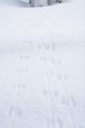 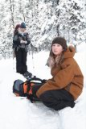 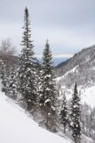
Неааа, мы все таки пошли кататься :) Хоть и немного, с Трех
Берез, ну а куда нам дальше и выше... Девченки еще молодые, неопытные.
А я уже старый, всё повидавший. В общем, мы подумали и я решил, что по
Большому прокатимся. Да, еще мимо Саня, Макс и Сигл проходили, но они
дальше пошли по гребню, их кто-то там ждал.
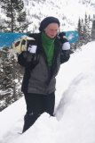 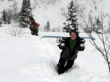 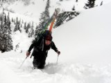 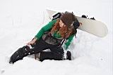
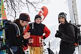 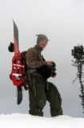 
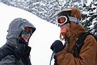 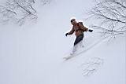 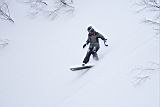
Снег в этот раз был не таким сказочным пухлячком, как в
прошлый, но зато такой, какой надо :) У Элизабет прогресс пошел в гору
- с горы она спустились уже быстрее :) Ну а Таня уже скоро меня догонять
будет :) А я зато с трех дропов дропнулся :) Адреналиново, блин!
После спуска еще сходили на большой трамплин, который недалеко от кунга.
Попрыгали и покатались до сумерек.
А вечером ходили в гости к соседям. Саня, Сигл и Макс как
обычно качественно отдыхали после качественного катания - сосиски в красном
вине, мартини, пивко. Ну дык, известные мажоры (в хорошем смысле этого
слова :)
День второй начался поздно - спали как бурундуки. Это вчера дрова
подосланные попались, быстро прогорали и зимуха не прогрелась. А в холодке
лучше спится, хоть и холодно :) Сбегали с Таней опять на Три Березы, катанули
в наш кулуар. Я полкулуара прокувыркался - учился делать разворот on-snow-360.
Элизабет возле большого трамплина у кунга каталась.
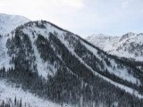 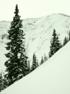 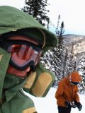
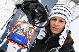
Потом чай попили, собрали-закапали вещи, девченки к электричке пошли,
а я еще на маленьком трамплине поколбасился. Блин, никак 180 с грэбом
в другую сторону не крутится, на спину заваливаюсь. Вера мимо проходила,
тоже попрыгала с трампа :) Вера любит попрыгать, парашютистка же :) Она
с друзьями в эти выхи в Двухэтажной жила, там компания на 12 человек собралась!
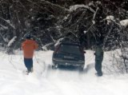 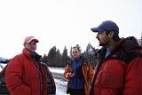
Возле шлагбаума встретил Папараци и ангарчан
Нестера и Саню,
впервые прокатился на буксире :)
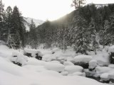 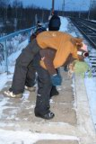 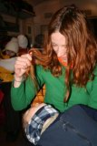 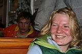
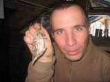
Мышу в пакете с хавчиком поймал :)
Ну вот такие вот скромные покатушки получились...
А это же тоже хорошо - спокойно и душевно...
Так что всем, ходившим и катавшим - Be Happy !!! - :)
Фото - Лёха Слюдянский, Таня Юрочкина, Элизабет Крюгер
Текст - Лёха Слюдянский
Декабрь 2008
|